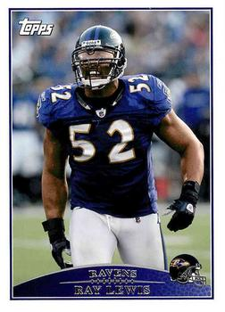
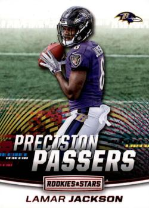
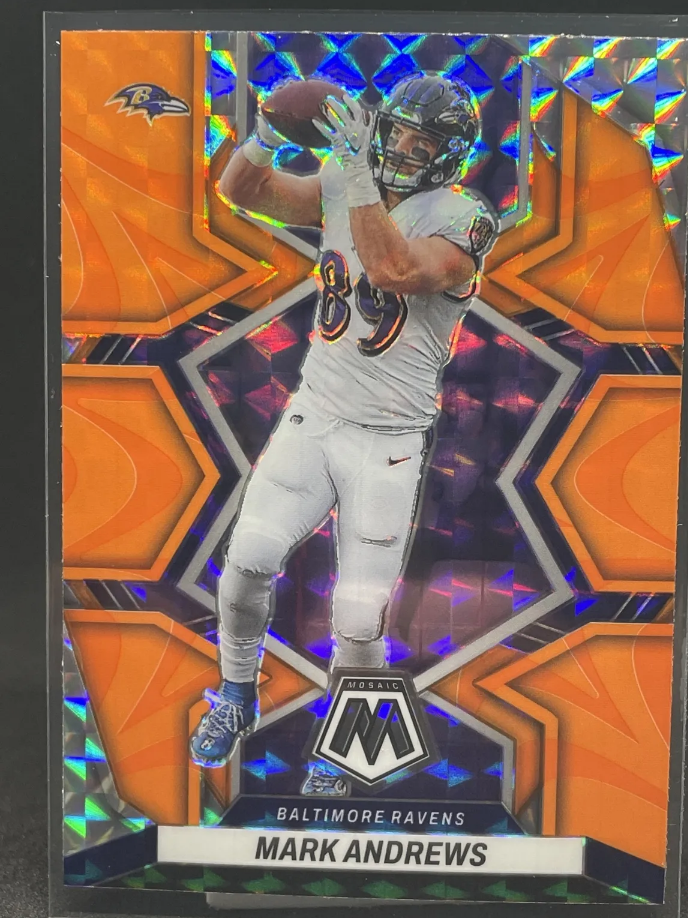
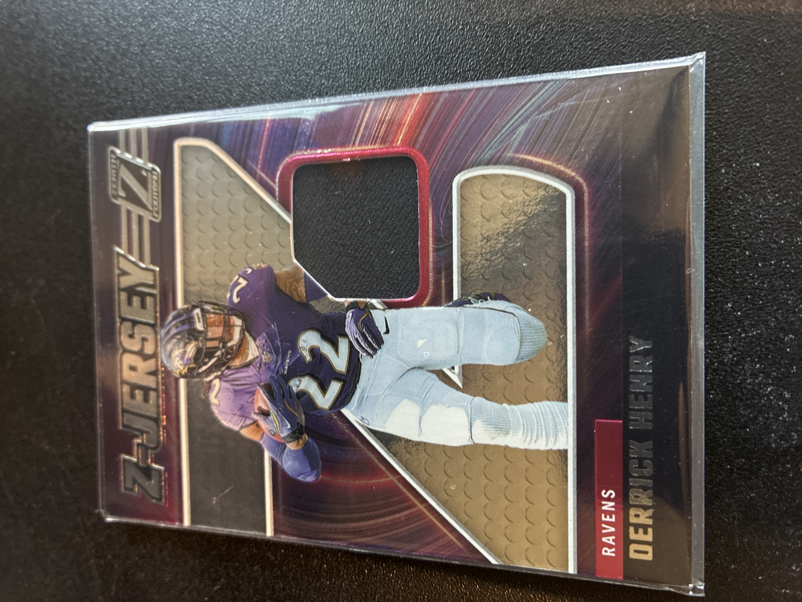

1. Base Cards
Base cards are the standard cards in a set. They are the most common and form the foundation of every product release.
Example: 2009 Topps Ray Lewis
Not all sports cards are created equal. Below are four common types of cards collectors encounter, using examples from my own collection.

Base cards are the standard cards in a set. They are the most common and form the foundation of every product release.
Example: 2009 Topps Ray Lewis

Inserts are special themed cards inserted into packs at lower odds than base cards. They often have unique designs and branding.
Example: 2018 Precision Passers Lamar Jackson

Parallels are alternate versions of base cards with different colors, finishes, or serial numbers. They are typically rarer than base cards.
Example: 2022 Mosaic Reactive Orange Mark Andrews

These cards contain a piece of game-used or player-worn material embedded into the card. They are usually thicker and more collectible.
Example: 2024 Zenith Z Jersey Derrick Henry
Understanding the difference between base cards, inserts, parallels, and memorabilia cards helps collectors make smarter decisions. Rarity, condition, and player popularity all influence value.